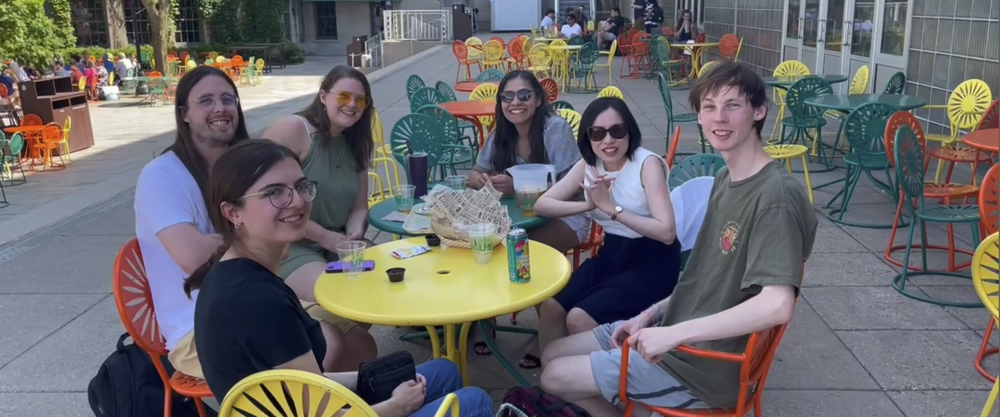
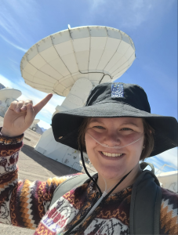
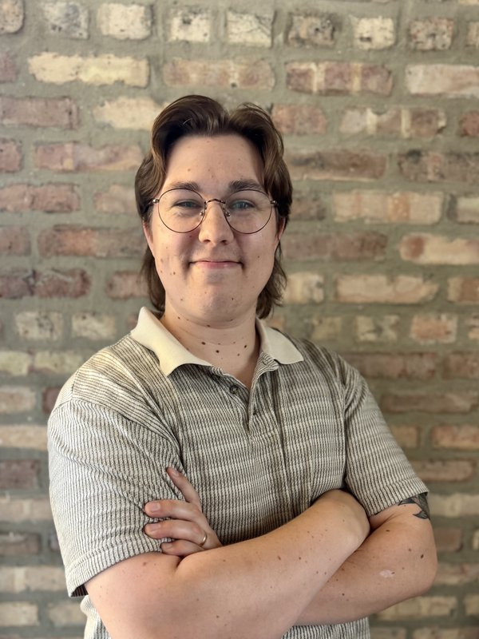
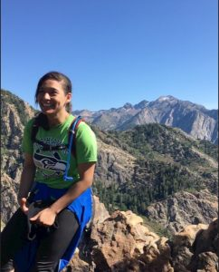
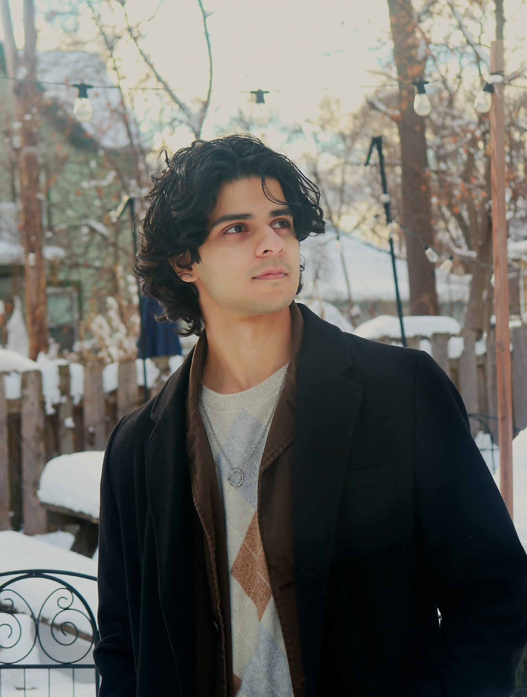
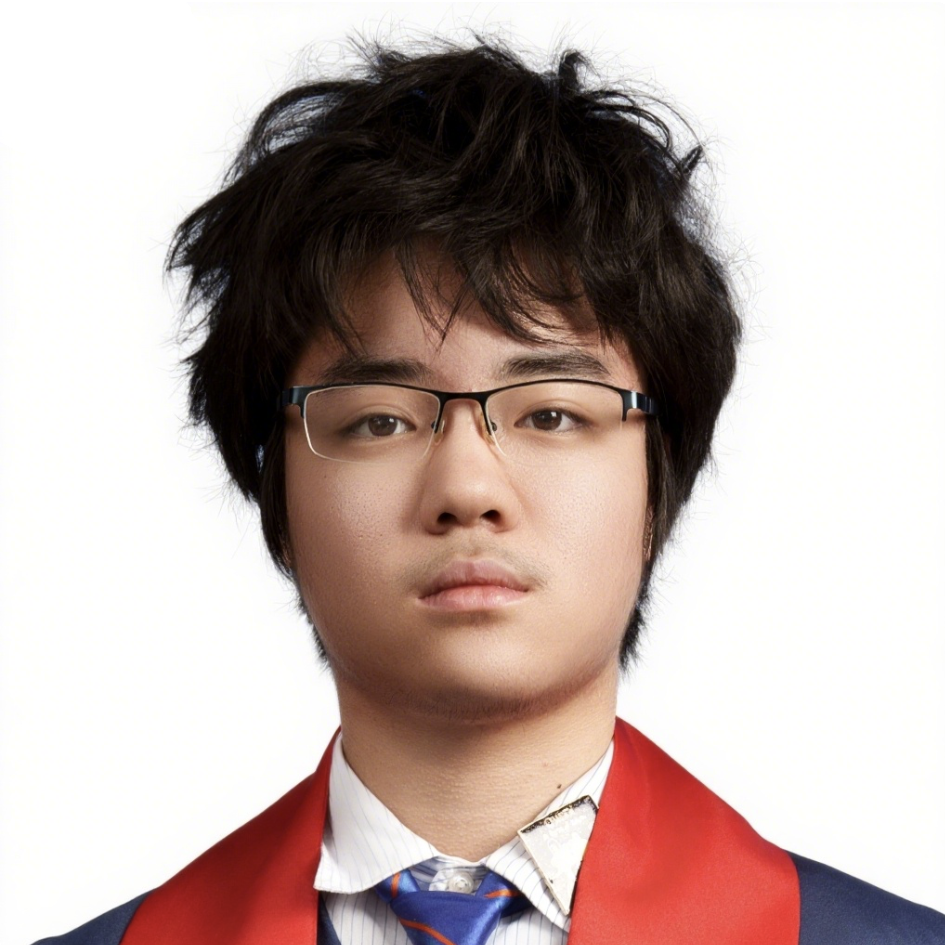

Principal Investigator
"My goal is to train the next generation of leaders in astronomy. In my lab, you are treated as a core collaborator from day one. We work together on the bleeding edge of observations to answer fundamental questions."
Student Success Stories
Postdoctoral Fellow & Visiting Scientist



Graduate Students

Estephani TorresVillanueva
PhD Candidate, NSF GRFP
Tayt Armitage
Graduate Student, NSF GRFP, WSGC Graduate Fellowship

Eshan Raul
Graduate Student, WSGC Graduate Fellowship
Undergraduate Researchers
Nick Tallon
Undergraduate Researcher
Sophomore fellowship, Peter Livingston Scholarship, WSGC Undergraduate Fellowship

Alonzo Ma
Undergraduate Researcher
Group Alumni
Nina Weichmann (Undergrad)
Now Master student at CU Boulder
WSGC Undergraduate Fellowship, Doherty Award
Leon Trapman (Postdoc)
Now at a data science company in the Netherlands
Ella Chevalier (Undergrad)
Now PhD student at UC Berkeley
Sophomore Fellowship, Doherty Award, First-author ApJ paper
Vicki Braianova (Undergrad)
Now Master student at Autonomous Univ. of Madrid
Sophomore Fellowship
Ben Trapistrant (Undergrad)
Now PhD student at University of Florida
Matt Kalscheur (Undergrad)
Now PhD student at CU Boulder
Olive Zhang (Undergrad)
Now PhD student at WashU St. Louis
Leopold Hutnik (Postbac)
Now PhD student at NMSU
Anna Conly (REU)
Now PhD student at NMSU